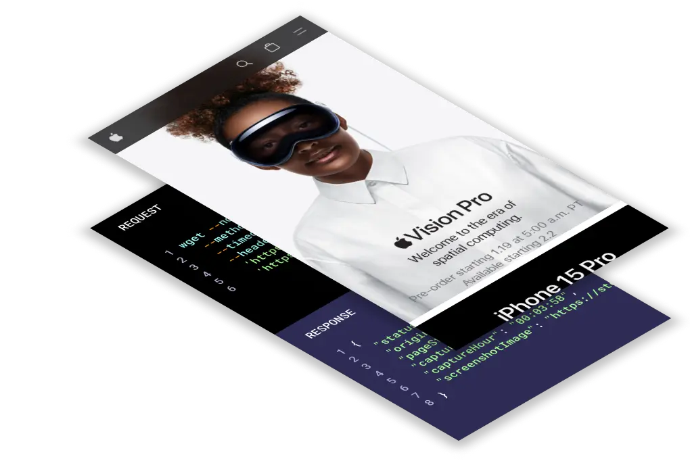

Affordable and Powerful Screenshot API
GetScreenshot is a powerful programmable website screenshot API that allows you to do screenshot capture operations at scale, and for less than other market solutions. No Code and Low Code Friendly.
Trusted by Companies Such As:


